Marketplace
The Think4ever Marketplace serves as a centralized hub connecting clients looking for talent with freelancers seeking open roles. This page walks you through navigating the marketplace and utilizing its key features.
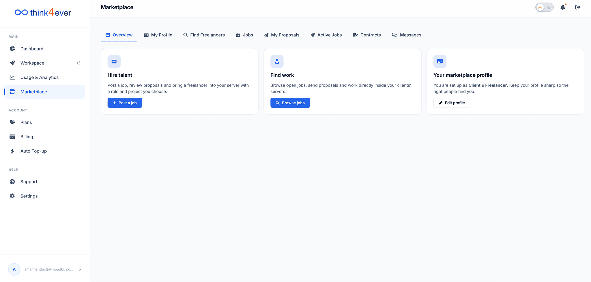
How to Navigate to Marketplace from your portal?
Option 1
From your workspace Dashboard, click on Marketplace tab
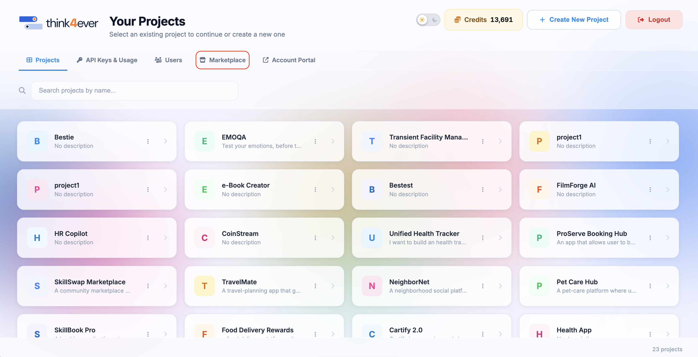
Option 2
Go to your Account Dashboard, click on Marketplace from the left menu.
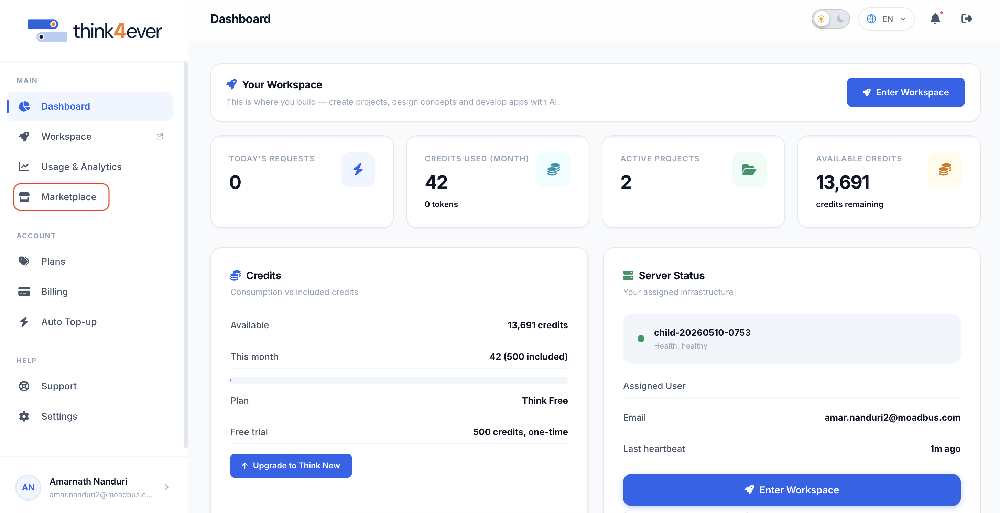
Navigation Overview
The top navigation bar inside the Marketplace section provides quick access to all core platform functions:
Overview
Quick-start action dashboard to hire, find work, or update your profile.

My Profile
View and manage how your professional profile appears to others.
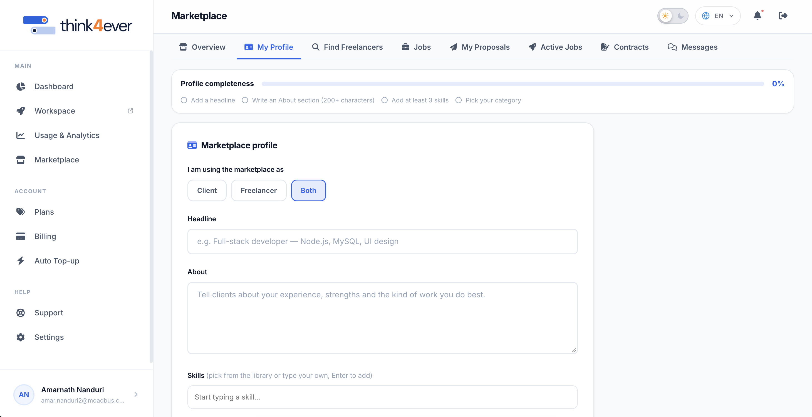
The My Profile section enables users to build, update, and manage their marketplace profile.
IMPORTANT: A well-completed profile increases visibility to potential clients and talent across the platform.
Profile Completeness Indicator
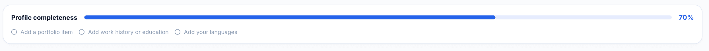
At the top of the section, a progress bar tracks your setup progress from 0% to 100%. Completing each of the following four core tasks fills the indicator bar:
- Add a headline: Provide a concise title summarizing your primary expertise or offering.
- Write an About section: Write a detailed description of your experience (minimum 200 characters).
- Add at least 3 skills: Include relevant technical or professional competencies.
- Pick your category: Select a primary work domain and up to 3 specialized skills.
Marketplace Profile Fields
A. Platform Usage Role ("I am using the marketplace as")
Select your primary operational role on the platform using the toggle buttons:
- Client: Choose this if you primarily post jobs and hire freelancers.
- Freelancer: Choose this if you offer services and bid on client projects.
- Both: Select this multi-role setting to hire talent and accept freelance work under a single unified account.
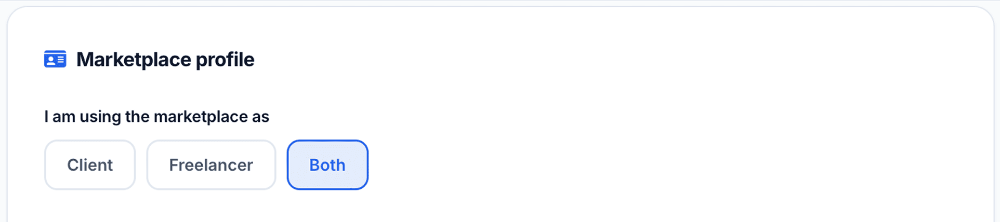
B. Headline
- Field Type: Single-line text input.
- Instructions: Enter a short, compelling title that highlights your key skills or primary domain.
- Example: Full-stack developer — Node.js, MySQL, UI design.
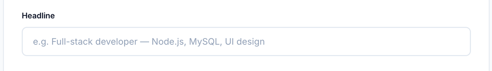
C. About
- Field Type: Multi-line text area (requires a minimum of 200 characters).
- Instructions: Write a comprehensive overview detailing your background, strengths, professional accomplishments, and the specific types of work you excel at.
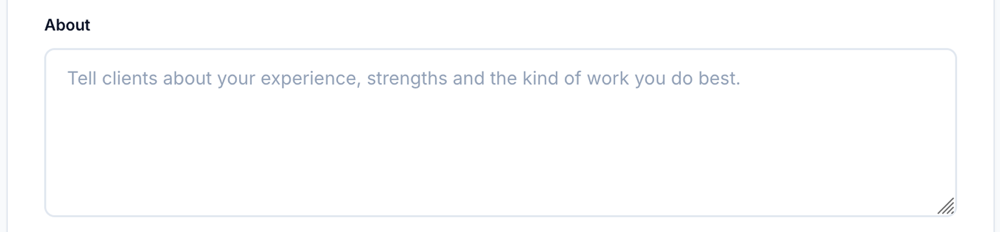
D. Skills
- Field Type: Interactive tag input field.
- Instructions: Type a skill and press Enter to add it, or select matching options from the auto-suggested library. Minimum required: 3 skills.
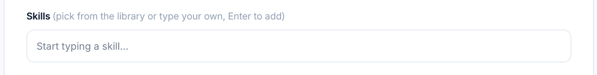
E. Category & Specialties
- Field Type: Category picker & multi-select tags.
- Instructions: Choose your primary business/technical domain along with up to 3 sub-specialties to categorize your profile for targeted search indexing.
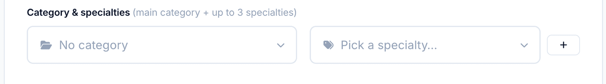
F. Hourly Rate & Pricing Terms
Purpose: Define your standard baseline billing rates for hourly contracts and default budget expectations for flat-rate projects.
Key Capabilities
- Base Hourly Rate ($/hr): Specify your default hourly billing rate shown on your public profile and pre-filled into job proposals.
- Currency Selection: Set your default operating currency (e.g., USD, EUR) for all financial contracts.
- Minimum Contract Size (Optional): Define a minimum project threshold for new clients (e.g., minimum $200 per project).
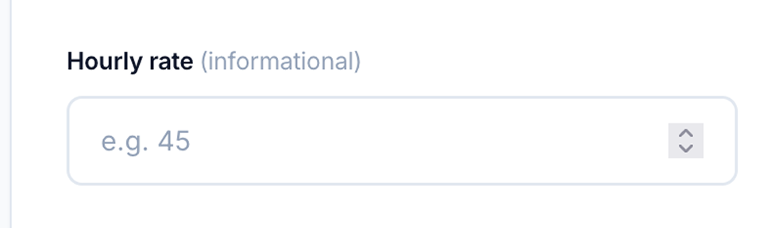
G. Availability & Weekly Capacity
Purpose: Signal your current workload status to potential clients so they know if you are open for new commitments.
Key Options:
- As Needed / Open to Offers: Flexible workload availability.
- Part-Time (< 30 hrs/week): Available for minor maintenance or advisory roles.
- Full-Time (> 30 hrs/week): Ready for dedicated, high-capacity project engagement.
- Unavailable / Not Accepting Work: Temporarily hide your profile from active talent searches.
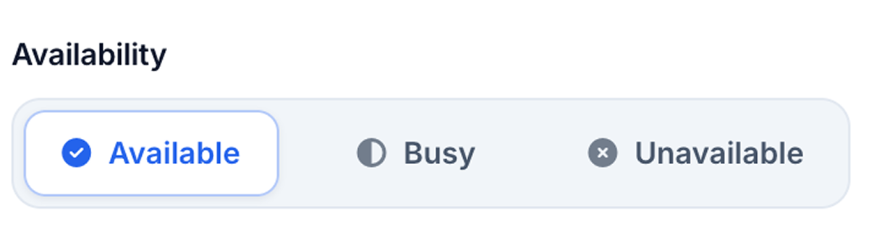
Portfolio & Featured Work
Provide concrete proof of work to boost credibility when bidding on client postings.
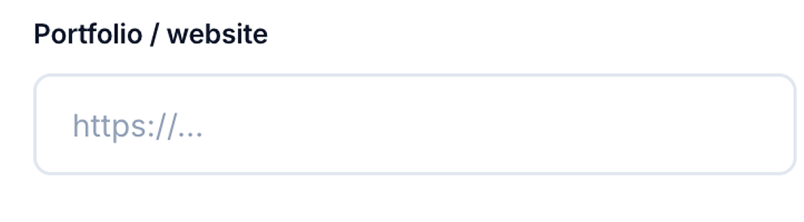
Find Freelancers
Search and filter talented freelancers available for hire.
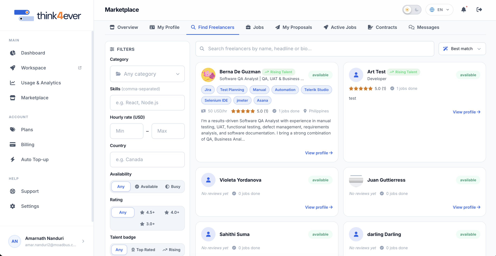
The Find Freelancers module allows clients to search, filter, and discover available talent across the platform. You can refine search parameters to match specific project requirements or sort candidates by relevance.
- Search Filters Panel: The left sidebar provides specific criteria filters
- Category: Dropdown menu to filter freelancers by domain expertise (e.g., Development, Design).
- Skills: Text field for comma-separated skill keywords (e.g., React, Node.js).
- Hourly rate (USD): Number fields setting minimum (Min) and maximum (Max) rates in USD.
- Country: Text input to filter freelancers by geographic location (e.g., Canada).
- Availability: Quick-select buttons: Any, Available, or Busy.
- Rating: Rating threshold buttons: Any, 4.5+, 4.0+, or 3.0+.
- Talent badge: Special distinction buttons: Any, Top Rated, or Rising Talent.
- Clear filters: Reset button at the bottom to restore default filter settings.
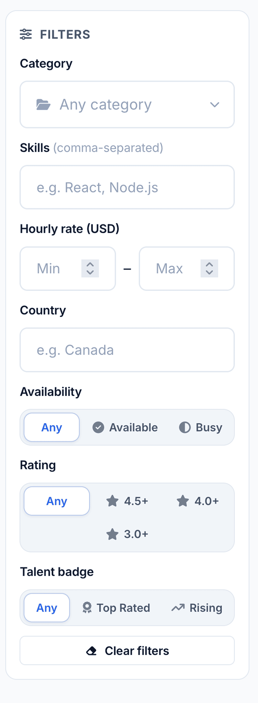
Freelancer Profile Cards
Each freelancer is displayed in a dedicated grid card showing key summary details:
- Header: Displays profile photo, full name, headline/title, and availability badge (e.g., available).
- Badges: Identifies special platform distinctions such as Rising Talent.
- Ratings & Performance: Displays average star rating, total review
count, and completed job count (e.g., 5.0 (1), 0 jobs done).
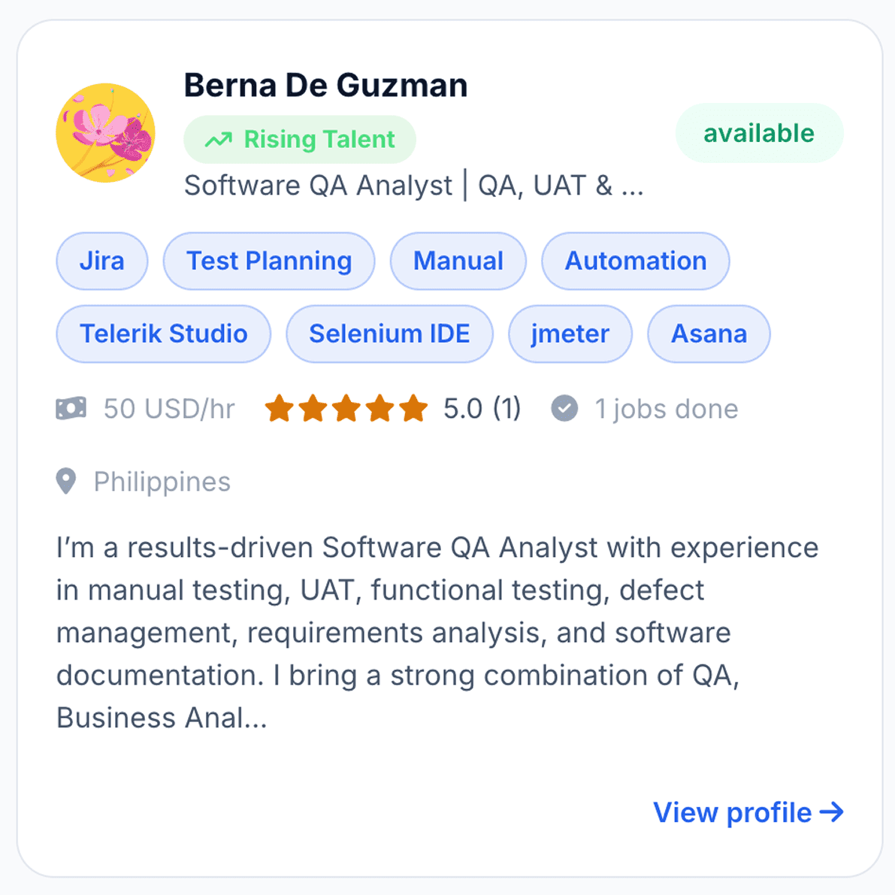
- View Profile Button: Direct link (View profile ->) at the
bottom-right of each card to inspect the full freelancer profile and send job
invitations.
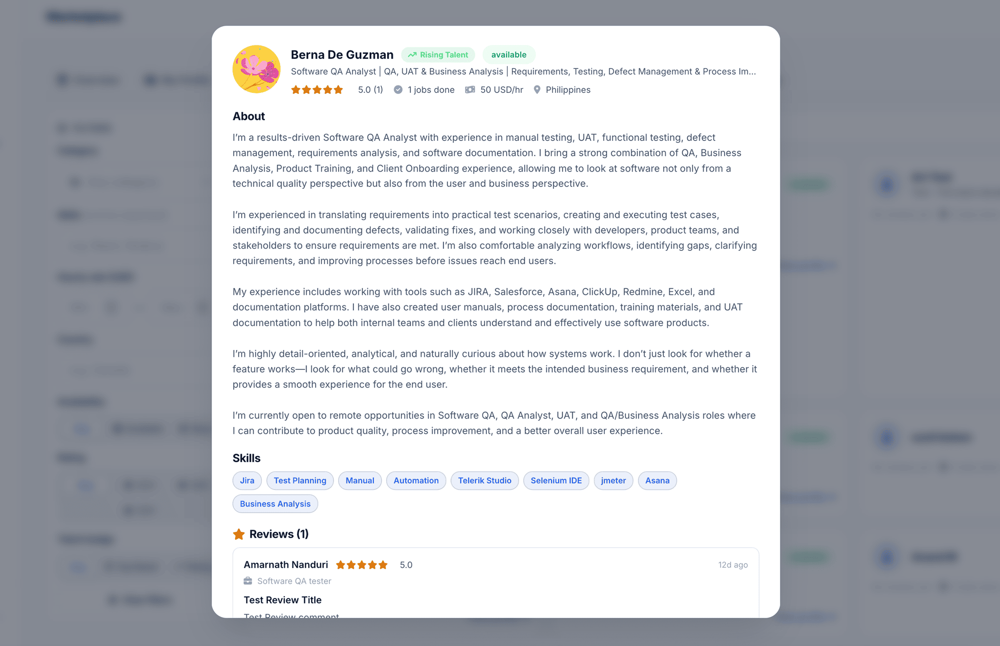
Jobs
Explore open positions and projects listed on the platform.
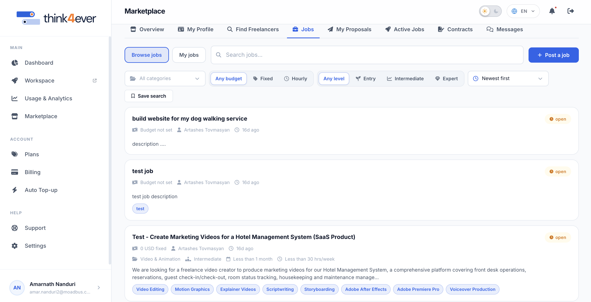
The Jobs section acts as the primary job board on Think4ever, enabling freelancers to discover open work opportunities and clients to manage their posted listings.
Search & Filtering Toolbar
Refine open project listings using the quick-filter bar below the search input:
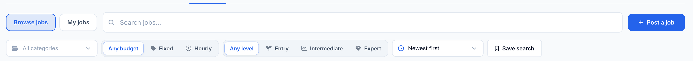
- Selector: Dropdown menu to filter jobs by industry domain (defaults to All categories).
- Budget Type: Select budget terms: Any budget, Fixed (flat price), or Hourly (hourly rates).
- Experience Level: Select required expertise levels: Any level, Entry, Intermediate, or Expert.
- Sort Dropdown: Reorder listings based on publication date or relevance (defaults to Newest first).
- Save Search: Save your current filter configuration for quick access during future sessions.
Job Listing Cards Overview
Each job posting is presented as a summary card detailing essential contract requirements:
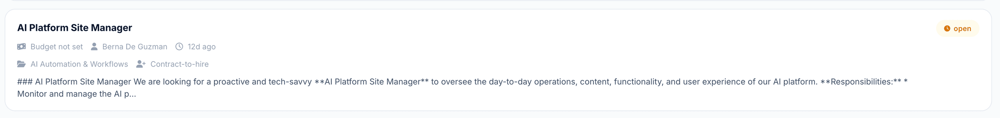
- Job Title: Displayed prominently at the top of the card.
- Status Indicator: Shows current listing availability (e.g., open).
- MetaData Row: Details crucial project metrics including budget/rate, client name, posting date, skill level, duration, and weekly hourly commitment (e.g., Less than 1 month, Less than 30 hrs/week).
- Job Description Preview: A snippet summarizing project goals, responsibilities, and deliverables.
- Skill Tags: Pill badges highlighting required core competencies and tools (e.g., Video Editing, Motion Graphics, Scriptwriting, Adobe After Effects).
My Proposals
The My Proposals section tracks all submitted job applications, bids, and their current contract status. It allows freelancers to monitor their active outreach and quickly communicate with prospective clients.
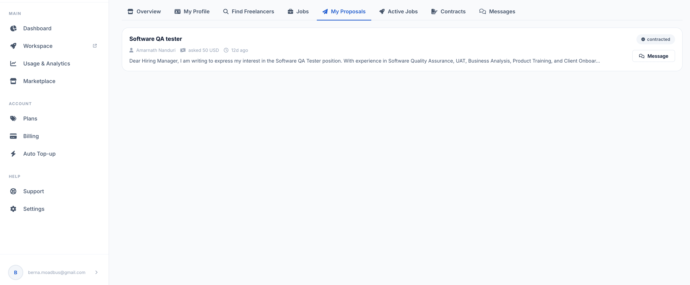
Proposal Card Structure
Each proposal is displayed in a dedicated summary card containing key submission details:
- Job Title: Displayed prominently at the top left of the card (e.g., Software QA tester).
- Proposal Metadata:
- Client / Hiring Manager: Shows the associated client account name.
- Submitted Bid Amount: Displays the proposed price/rate (e.g., 50 USD).
- Submission Time: Indicates when the proposal was submitted (e.g., 17h ago).
- Cover Letter Preview: Excerpt showing the initial lines of your submitted pitch.
- Status Badge: Indicates the current standing of the application (e.g., contracted).
- Message Action Button: A quick-action Message button to open a direct chat thread with the client for that project.
Proposal Status Indicators
Proposal cards display different status badges to reflect application progress:
- Submitted / Pending: The proposal has been delivered and is awaiting client review.
- Contracted: The client has accepted the proposal and established an active contract.
- Declined / Closed: The application was not selected or the job posting was canceled.
Key Actions
- Review Proposal Details: Click anywhere on the proposal card to view the full cover letter, terms, and attachments.
- Contact Client: Click the Message button on any card to communicate directly with the hiring manager regarding project specifics.
Active Jobs
The Active Jobs section displays all currently active client-freelancer engagements and contracts. It serves as a portal to access collaborative workspaces and review contract details.
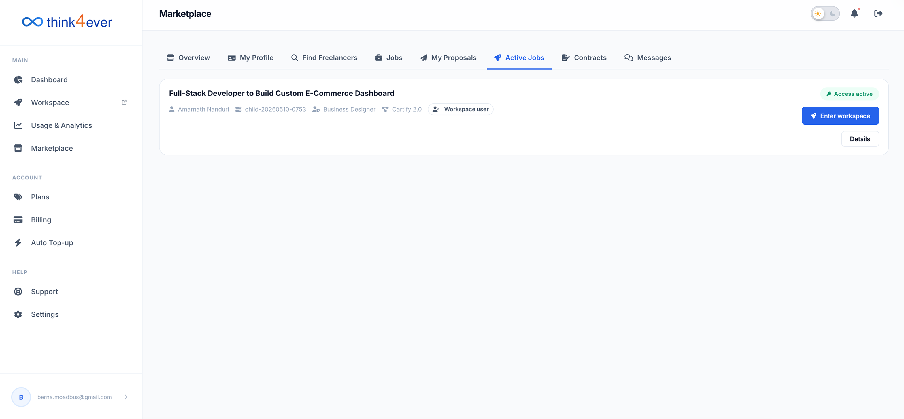
Active Job Card Components
Each running contract is summarized in a dedicated job card with key details and quick actions:
- Job Title: The title of the ongoing engagement (e.g., Full-Stack Developer to Build Custom E-Commerce Dashboard).
- Contract Status Badge: Shows the current operational status at the top-right (e.g., green Access active badge).
- Contract Metadata Row:
- Client / Manager Name: Displays the primary supervisor or hiring client.
- Contract ID / Reference: Unique contract identifier code.
- Role / Title Tag: Assigned platform or project role.
- Access Level: Workspace permission tier (e.g., Workspace user).
- Quick Actions: Each active job card includes two primary buttons on the right side
- Enter workspace: Launches the integrated project environment or server workspace directly, granting immediate access to project tools, deliverables, and team collaboration channels.
- Details: Opens the expanded view of the contract terms, milestone schedules, payment history, and project agreement documents.
Workflow Guidance for Active Jobs
- Accessing Workspaces: Click the blue Enter workspace button on any active job card to jump straight into project channels and tools.
- Reviewing Milestones & Terms: Click Details to check deliverable deadlines, review contract terms, or inspect payment schedules.
Contracts
The Contracts section provides an overview of all formal agreements associated with your account. It categorizes agreements by user role (e.g., As client) and tracks both active and completed engagements.
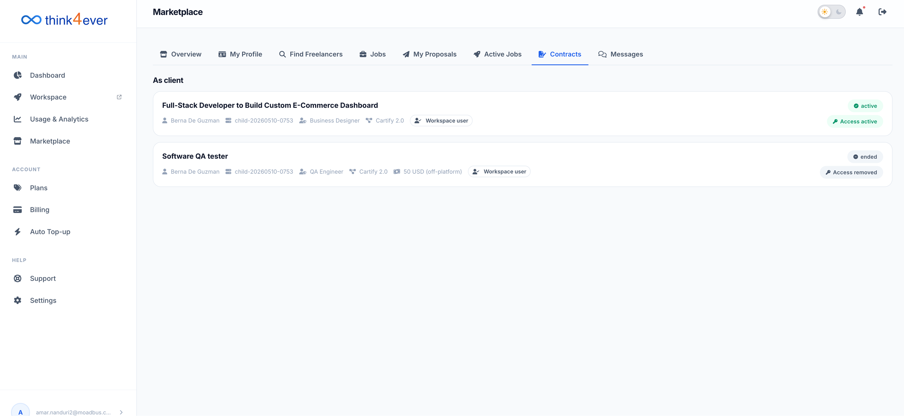
Section Structure & Role Categorization
- Role Heading: Contracts are grouped by your active platform role (e.g., As client or As freelancer).
- Contract Summary Cards: Each contract entry displays essential
agreement metadata and access permissions:
- Job Title: The official name of the project or position (e.g., Full-Stack Developer to Build Custom E-Commerce Dashboard, Software QA tester).
- Metadata Row: Displays the contracted user/freelancer name, unique contract reference ID, assigned role title, platform version/tier, rate structure, and workspace access level (e.g., Workspace user).
Contract & Access Status Indicators
Each contract card features status badges on the right side indicating its lifecycle and workspace access level:
| Status Badge | Description |
|---|---|
| active (Green) / Access active (Green) | The contract is currently ongoing. The hired freelancer or client has full active access to the workspace environment. |
| ended (Gray) / Access removed (Gray) | The project or contract has ended. Access permissions to the workspace environment have been revoked. |
Key Actions
- Inspect Contract Details: Click on any contract card to open full details, including milestone histories, total payouts/invoices, and agreement agreements.
- Review Workspace Access: Monitor whether workspace access is currently enabled or revoked for specific team members or freelancers.
Contract Details View
Clicking on any contract card opens the Contract Details Modal, providing a comprehensive breakdown of agreement specifications, active timelines, participants, and management actions.
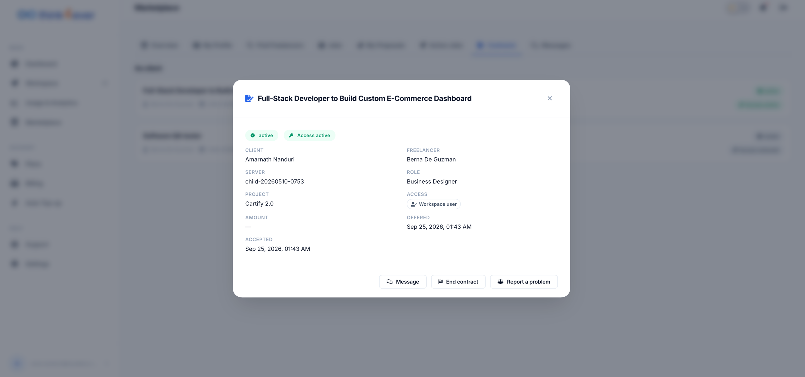
Contract Overview Information
The top section of the modal highlights the project title alongside live status tags:
- Project Title: Prominently displays the full job title (e.g., Full-Stack Developer to Build Custom E-Commerce Dashboard).
- Status Badges: Displays current operational states (e.g., green active and Access active badges).
Action Buttons
At the bottom of the modal, three primary management actions are available:
- Message: Opens a direct chat window with the user to communicate about contract milestones or deliverables.
- End contract: Initiates the formal contract termination workflow, finalizing payments and revoking server access permissions.
- Report a problem: Opens a dispute or support ticket to request platform assistance regarding contract issues.
Messages
The Messages section provides a real-time messaging hub for direct communication between clients and freelancers regarding project proposals, active contracts, and deliverables.
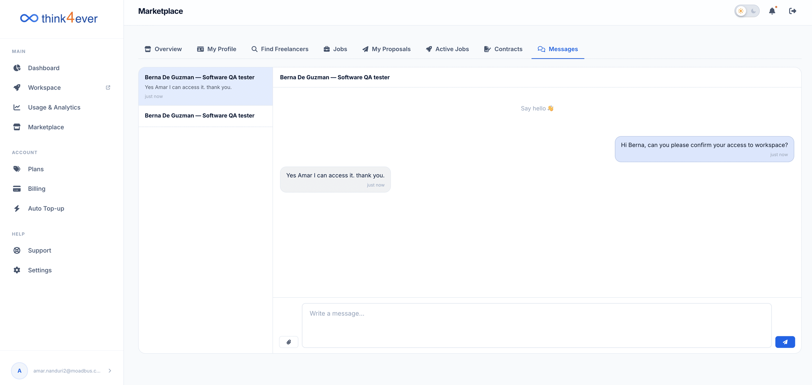